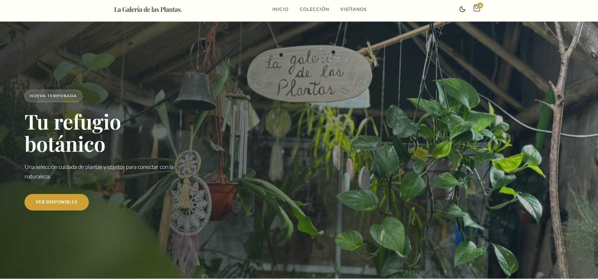

Sistema de Gestión de Stock & POS
Solución Full Stack para un comercio real. Sincroniza inventario en tiempo real entre una App de Venta (Móvil) y un Catálogo Web (Cliente) usando Google Sheets como base de datos.
Actualmente cursando el 2.º año de Ingeniería en Sistemas. Combino la lógica de la ingeniería con la creatividad del desarrollo web para crear soluciones eficientes.